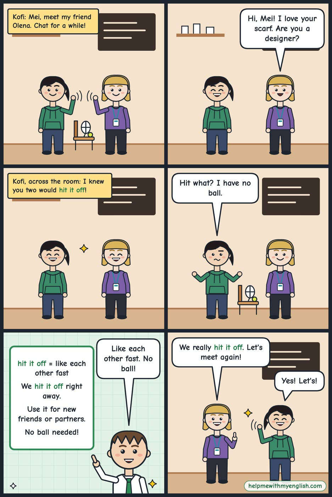

hit it off
To like each other immediately when you meet.
Mei and Olena hit it off right away at the party.
Tip: Use it for two people: 'A and B hit it off' or 'I hit it off with B'. It's usually about a first meeting, and it's always past or present, never a plan.
Hear it in conversation
KofiHow was the trip? Did you meet your flatmate for the semester?
AmiraYes, we met at the station yesterday. Honestly, I was nervous.
KofiAnd?
AmiraWe hit it off straight away. We talked the whole way home about cooking and cycling.
KofiThat's a relief. It makes the next few months a lot easier.
AmiraDefinitely. She's already invited me to a cycling club on Sunday.
Workbook
1. What does it mean?
In this conversation, what does 'hit it off' mean?
2. Fill the gap
I was worried about meeting Diego's brother, but we and ended up chatting for hours.
3. Choose the best reply
Ken: So, how did your first meeting with your new manager go?
4. Your turn: speak
Tell me about a time you met someone new and got along with them very quickly.
Show an example answer
Last year I started a language course, and I sat next to a woman called Ana. We hit it off in the first ten minutes because we both loved hiking and bad jokes. We're still close friends now.
Answer key: hit it off
- 1. D. They quickly felt friendly and comfortable with each other.
- 2. hit it off
- 3. C. Really well. We hit it off, and she's easy to talk to.
- 4. Example: Last year I started a language course, and I sat next to a woman called Ana. We hit it off in the first ten minutes because we both loved hiking and bad jokes. We're still close friends now.
See it in a comic
